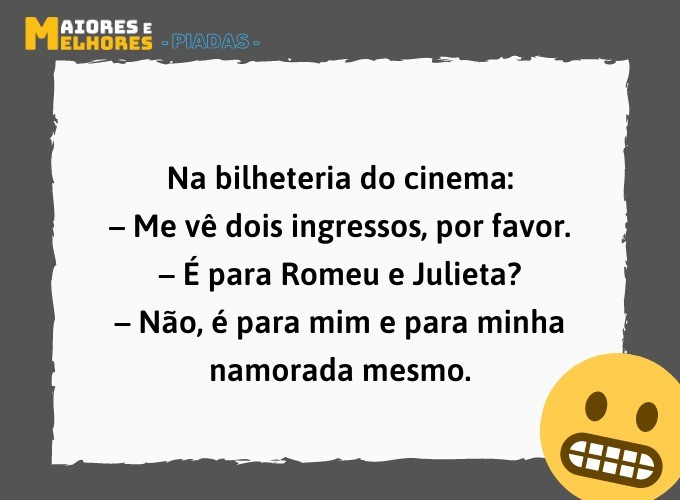

Gosto de piadas
Bem, vou falar um pouqinho sobre mim, descobri o mundo da programação por influência de um sobrinho e estou gostando muito, adoro quando os programas funcionam; é uma sensação maravilhosa. Não guardo magoa, sou super sensivel e sincera. Não gosto de crumprir regras, extrovertida, não durmo antes das 23h e amo chocolate.